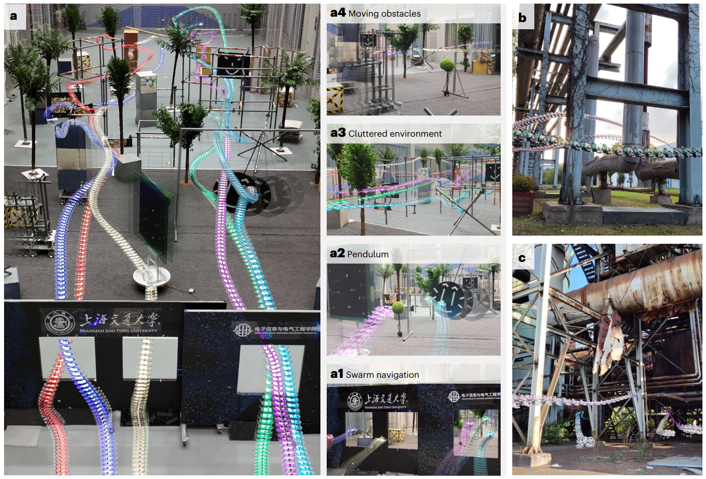
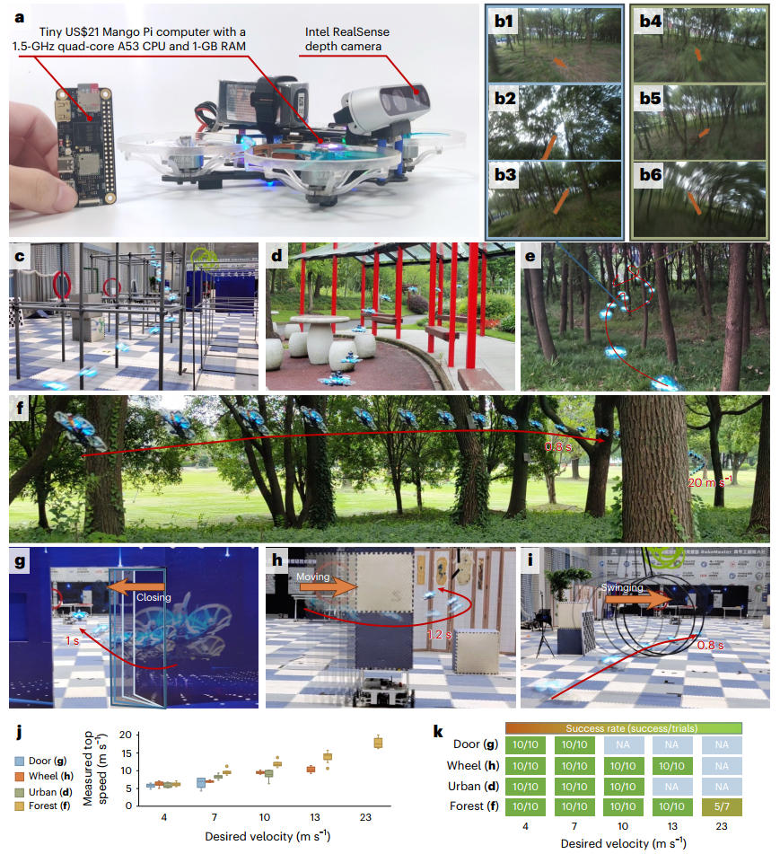
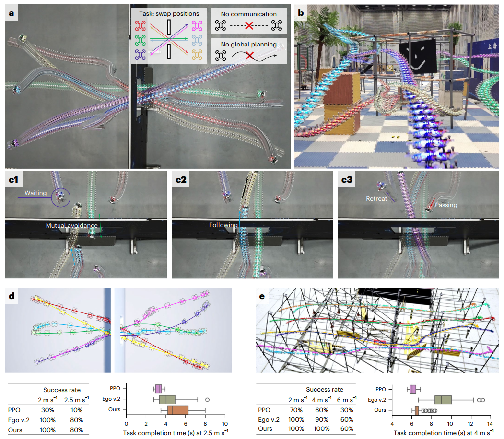
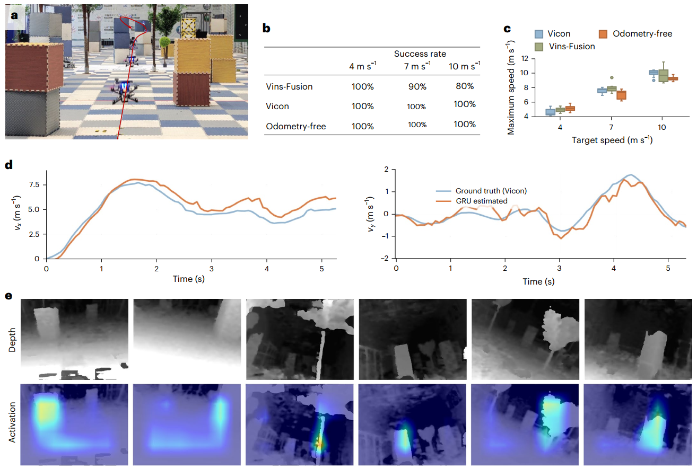
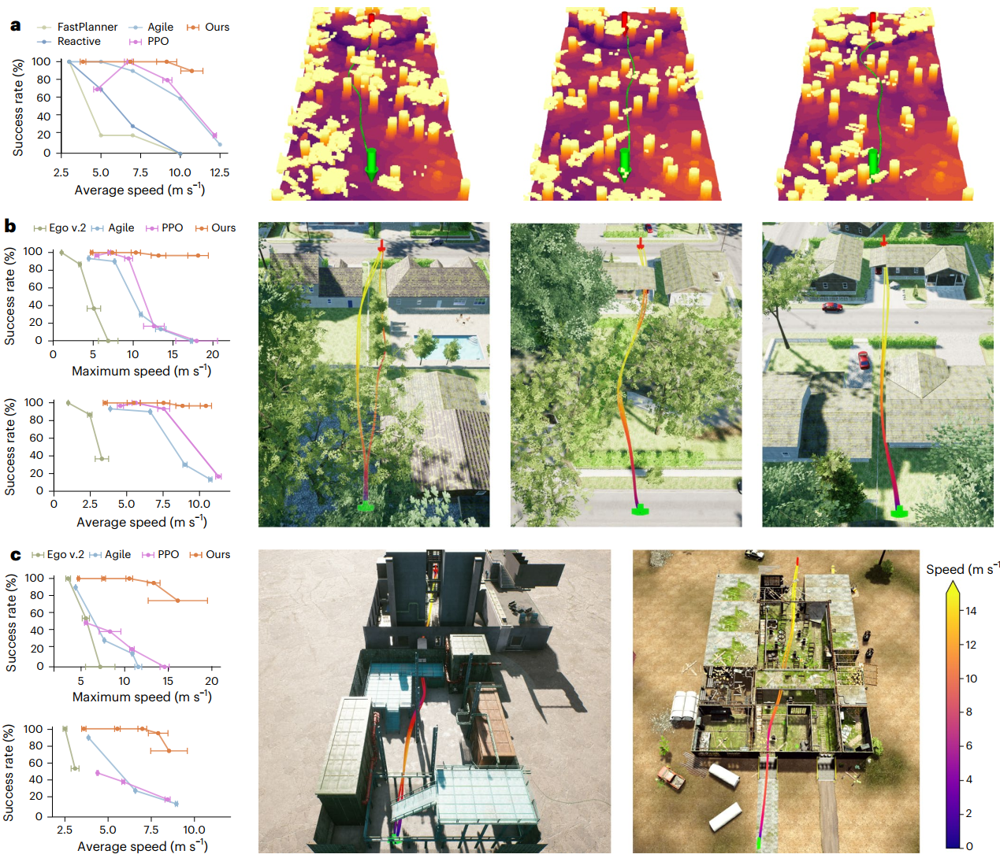

| Title | Learning Vision-Based Agile Flight via Differentiable Physics（基于可微分物理的视觉敏捷飞行学习） |
| Authors | Yuang Zhang1,3、Yu Hu1,3、Yunlong Song2,3（共同一作），Danping Zou1（corresponding），Weiyao Lin1（corresponding） |
| Affiliation | 1. 上海交通大学（Shanghai Jiao Tong University）；2. 苏黎世大学（University of Zurich） |
| Venue | Nature Machine Intelligence，2025年6月，Vol. 7，pp. 954–966 |
| DOI / Links | 10.1038/s42256-025-01048-0 | Received: 2024-07-15 | Accepted: 2025-05-01 | Published: 2025-06-16 |
| TL;DR | 提出一种端到端可微分物理仿真训练框架，通过将损失梯度直接反向传播穿过点质量物理模型来优化神经网络控制策略，实现视觉敏捷飞行。在真实森林环境中达到 20 m/s（超越此前模仿学习方法 2 倍），成功率 90%。无需通信的多智能体集群展现出等待、跟随、退让等涌现自组织行为。所有计算仅需一块 US$21 的 ARM 单板计算机（Mango Pi），成本不到现有 GPU 方案的 5%。 |
| Inspiration Source | What Insight It Inspired | Type |
|---|---|---|
| 可微分编程在机器人学中的兴起（DiffTaichi、GradSim 等） | 将可微分物理的思想从四足 locomotion / 系统辨识迁移到视觉无人机导航——此前这个领域从未使用过可微分仿真进行真实世界飞行。关键是发现：简单的点质量模型足够产生可迁移的策略，不需要刚体全动力学 | 架构 |
| Metz et al. (2021) "Gradients are not all you need"——长时间反向传播的梯度爆炸问题 | 引入时间梯度衰减（exponential gradient decay $e^{-\tau t}$）：在 BPTT 过程中对梯度乘以指数衰减因子，使得监督信号主要来自近期未来，消除远期不确定障碍的干扰。这解决了可微分仿真最棘手的数值问题 | 方法 |
| GRU 门控循环单元（Cho et al. 2014）——序列建模中的隐状态维护 | 使用 GRU 维护时序隐状态，使得网络仅依赖单帧深度图即可隐式提取运动线索（motion cues）——无需堆叠多帧输入，推理速度更快、更适合资源受限硬件 | 策略 |
| Softplus 障碍函数（Dugas et al. 2000）——二阶平滑约束 | 将障碍物避碰构造为连续可微的 softplus 势垒函数——接近速度 $v_c^k$ 作为调节因子，远离障碍物时 loss=0，靠近时平滑增大。这是将传统控制理论中的障碍函数引入可微分学习的经典迁移 | 数学 |
机载端只吃一张 16×12 的池化深度图加少量状态量：CNN 提特征、GRU 记时序，输出的是期望推力加速度，而不是电机转速。真正的文章做在训练端——环境本身就是一个可微分的点质量仿真器。
flowchart LR
subgraph IN["机载输入"]
DEP["深度图
Depth"]
STA["状态量
State"]
end
subgraph POL["策略网络"]
CNN["CNN 编码
Conv Net"]
GRU["GRU 融合
Recurrent"]
ACT["加速度指令
Thrust"]
end
subgraph SIM["可微分仿真（本文创新）"]
DYN["点质量动力学
Physics"]
end
DEP -->|"16×12"| CNN
STA -->|"速度·姿态"| GRU
CNN -->|"192 维特征"| GRU
GRU -->|"隐状态"| ACT
ACT -->|"训练"| DYN
DYN -.->|"渲染下一帧"| DEP
ACT -->|"部署"| UAV["四旋翼
BetaFlight"]
classDef data fill:#fef7ed,stroke:#f59e0b,stroke-width:2px,color:#92400e
classDef net fill:#e8f0fe,stroke:#3b82f6,stroke-width:2px,color:#1d4ed8
classDef phys fill:#f0ebfd,stroke:#8b5cf6,stroke-width:2px,color:#6d28d9
classDef fly fill:#e6f7ee,stroke:#10b981,stroke-width:2px,color:#047857
class DEP,STA data
class CNN,GRU,ACT net
class DYN phys
class UAV fly
配色：橙 = 机载输入，蓝 = 策略网络，紫 = 可微分仿真（本文创新），绿 = 真实平台；实线是前向，虚线是下一帧观测回流。
点质量动力学、推力延迟与二次阻力都是可微的，所以损失对状态的梯度可以沿仿真时间反向穿过整个物理模型，回到每个时刻的加速度指令，再回到 CNN / GRU 的参数——这就是「解析一阶梯度」取代 RL 采样估计的地方。
flowchart LR DEP["深度图
Depth"] -->|"16×12"| CNN["CNN+GRU
策略网络"] STA["状态量
State"] -->|"速度·姿态"| CNN CNN -->|"加速度 u_k"| SIM["可微分仿真
Physics"] SIM -->|"位姿"| REND["深度渲染
Render"] REND -.->|"下一帧"| DEP SIM -->|"状态轨迹"| LOSS["物理损失
Loss"] LOSS -.->|"∂L/∂x 逐步衰减"| SIM SIM -.->|"∂L/∂u_k"| CNN CNN -.->|"∂L/∂θ"| UPD["参数更新
Adam"] classDef data fill:#fef7ed,stroke:#f59e0b,stroke-width:2px,color:#92400e classDef net fill:#e8f0fe,stroke:#3b82f6,stroke-width:2px,color:#1d4ed8 classDef phys fill:#f0ebfd,stroke:#8b5cf6,stroke-width:2px,color:#6d28d9 classDef grad fill:#ffe4e6,stroke:#f43f5e,stroke-width:2px,color:#be123c class DEP,STA data class CNN net class SIM,REND phys class LOSS,UPD grad
配色：橙 = 观测，蓝 = 策略网络，紫 = 可微仿真，红 = 损失与梯度回传。反向每退一步都乘一个衰减因子，避免长程梯度累积成爆炸。
工程上：一次迭代 64 个并行环境 × 150 步（dt = 1/15 s）；部署时同一网络以 15 Hz 深度图推理，无里程计、无建图，实测最高 20 m/s。
| 类别 | 内容 | 维度 |
|---|---|---|
| 输入 | RealSense D435i 深度图（16×12 池化）+ 目标方向 + 速度估计（可选）+ 姿态估计 | 深度 16×12 + 状态向量 ~6 维 |
| 输出 | 期望加速度向量（3 维：推力大小 + 方向），由飞控转换为姿态 + 总推力 | 加速度 ∈ R³ |
| 目标 | 在未知复杂环境中以指定速度无碰撞抵达目标位置——单智能体 90% 成功率，多智能体涌现自组织协同 | 最速 20 m/s（森林），成功率 >90%（>10 m/s） |
这是一个端到端视觉运动控制学习问题——不是传统的"感知→规划→控制"级联架构，而是从深度图直接输出飞行动作指令的单一神经网络策略。训练在可微分物理仿真中进行（策略参数通过仿真器反向传播更新），部署在US$21 ARM 计算机上实时推理。场景涵盖静态稠密障碍物（森林、城市公园、工厂）和动态障碍物（关门、平移障碍、摆锤），任务包括单智能体高速穿越和多智能体无通信集群导航。
表头用英文，正文用中文
| Prior Method | Core Idea | Why It Fails |
|---|---|---|
| Mapping-Based Navigation（基于建图的导航：FastPlanner, Ego-Planner, Ego v.2） | 先用视觉/激光构建占据栅格地图或 ESDF，然后用搜索/梯度优化规划轨迹，最后用模型预测控制（MPC）跟踪 | 级联架构的天然缺陷：每一步引入延迟和误差。高速飞行时：（a）视觉里程计漂移（特征追踪失败）→ 地图错位；（b）建图计算量巨大（Ego v.2 定位 CPU 使用率超其他进程之和）→ 延迟增加；（c）误差累积 → 规划失效。实测中 Ego v.2 仅能在 3 m/s 以下稳定运行。 |
| Imitation Learning（模仿学习：Agile, Deep Drone Acrobatics） | 训练策略模仿专家示范（由模型预测控制器或人类飞手生成的轨迹） | 专家依赖 + 泛化差：在稠密障碍物 + 高速条件下，基于采样的专家难以持续找到最优路径 → 训练的智能体飞行不稳定。最关键的是——集群专家策略极难设计（需要协调多个智能体），因此模仿学习几乎无法用于集群场景。Agile 在未见环境下降明显。 |
| Reinforcement Learning（强化学习：PPO, Deep-ILC） | 在环境中试错采样，用零阶梯度（策略梯度定理）优化策略 | 采样效率极低：零阶梯度高方差、收敛慢。本文方法仅需 PPO 10% 的采样量即可达到更高奖励。多智能体场景下采样量指数增长——PPO 在 6 机换位任务中成功率仅 10~30%，且未观察到任何自组织行为（等待/跟随/退让）。 |
| CNN Direct Regression（端到端 CNN 直接映射：CAD2RL, Giusti et al.） | 用简单 CNN 直接将图像映射为控制指令，无显式规划 | 缺少时序信息：单帧图像无法感知动态障碍物的运动趋势。速度慢（通常 <5 m/s）、泛化弱（仅适用于特定场景如森林小径）。缺乏可微分物理先验，训练依赖大量真实数据或 RL 采样。 |
本文的核心是可微分仿真驱动的端到端学习框架，而非"算法"的传统意义。训练分四个关键步骤：(1) 在 CUDA PyTorch 扩展中实现点质量可微分物理仿真；(2) 前向仿真收集 64 条并行轨迹（150 步/条）；(3) 计算物理驱动的损失函数（速度匹配 + softplus 避碰 + 平滑）；(4) 沿仿真时间轴反向传播策略梯度（使用时间梯度衰减），更新策略参数。以下逐一拆解关键公式。
| 参数 | 取值 | 含义 | 为什么取这个值 |
|---|---|---|---|
| 时间步长 $\Delta t$ | 1/15 s | 仿真步长（与深度相机帧率匹配） | 与 RealSense D435i 的 15 Hz 帧率一致，避免仿真与真实间的时间不匹配 |
| 轨迹长度 T | 150 steps = 10 s | 每条训练轨迹的时间跨度 | 足够涵盖从起点到终点的完整飞行过程（10 秒 x 20 m/s = 200 m 范围） |
| 并行环境数 | 64 | 每批训练的并行仿真环境数 | 平衡 GPU 内存与训练吞吐量。64 条并行轨迹提供足够的多样性 |
| 衰减率 $\tau$ | 0.25~4 均可 | 时间梯度衰减系数 | 消融研究（Fig. 6c）表明 $\tau$ 在 0.25~4 范围均可大幅优于 vanilla BPTT，说明该方法对超参数不敏感 |
| 深度图分辨率 | 16x12（池化后） | 深度图输入尺寸 | 原始分辨率太大（CPU 无法实时处理），16x12 极低分辨率是低算力推理的必要妥协——但论文证明它足够提取避障所需的结构信息 |
| 空气阻力参数 | 平台标定 | 二次阻力模型系数 | 通过真实平台飞行数据标定——这是实现零样本 sim-to-real 的关键细节 |
| 控制延迟 $\tau$ | 以平台标定为准 | 飞控内环响应的固定延迟 | 在仿真中显式建模控制延迟是实现 sim-to-real 的关键——否则策略会学到"理想响应"而非真实响应 |
| 对比维度 | 可微分物理（本文） | 强化学习（PPO） | 模仿学习（Agile） |
|---|---|---|---|
| 动力学处理 | 白箱——解析雅可比，梯度直接回传 | 黑箱——依赖采样估计梯度 | 黑箱——不显式建模动力学 |
| 梯度阶数 | 一阶（低方差） | 零阶（高方差） | 监督学习梯度（无动力学） |
| 样本效率 | 最高（10% RL 样本量） | 低（需要海量仿真数据） | 高（但依赖专家数据） |
| 多智能体 | 天然支持——涌现自组织 | 采样指数增长，成功率低 | 几乎不可用（缺集群专家） |
| 关键挑战 | 梯度爆炸 → 时间衰减解决 | 方差 + 效率 → 根本瓶颈 | 专家依赖 → 泛化瓶颈 |
理解本论文需要掌握三个关键基础原理：可微分物理仿真（为什么梯度可以直接穿过物理模型）、时间梯度衰减（如何让可微分优化在长时间序列上稳定）、点质量 vs 刚体建模的优化景观差异（为什么简单模型反而更好）。
为什么这个"简单"的点质量模型是可微分物理的关键优势：点质量模型的雅可比矩阵具有极简形式——$\partial p_{k+1}/\partial v_k = \Delta t \cdot I$（恒等缩放），$\partial v_{k+1}/\partial a_k = \Delta t/2 \cdot I$——这意味着梯度信号流畅地在时间轴上传播，不会像刚体模型那样因旋转矩阵、欧拉角奇点等非线性导致梯度消失或突变。这提供了更平滑的优化景观（optimization landscape），使得一阶梯度下降更高效。
步骤 1：随机生成简单几何体场景（平面、长方体、球体、圆柱体），64 个环境并行。
步骤 2：策略网络接收深度图 + 状态 → 输出期望加速度 $u_k$。
步骤 3：$u_k$ 经过控制延迟 + 指数平滑 → 滤波推力。加上空气阻力 → 总加速度。数值积分 → $v_{k+1}$, $p_{k+1}$。
步骤 4：计算损失 $\mathcal{L} = \lambda_v \mathcal{L}_v + \lambda_c \mathcal{L}_c + \lambda_a \mathcal{L}_a + \lambda_j \mathcal{L}_j$。
步骤 5：$\partial \mathcal{L}/\partial \theta$ 通过时间梯度衰减 BPTT 直接反传。
步骤 1：相同仿真环境（但不可微分）。
步骤 2：策略采样动作，环境返回下一状态和奖励。
步骤 3：收集 rollouts，用广义优势估计（GAE）估计 advantage。
步骤 4：用策略梯度定理（零阶）$\approx \mathbb{E}[\nabla \log \pi \cdot A]$ 更新策略。
步骤 5：重复，需要 10x 采样量才能达到可微分物理的性能。
为什么 vanilla BPTT 会爆炸：在 150 步的仿真轨迹上反向传播时，每一步的雅可比矩阵 $\partial x_{j}/\partial x_{j-1}$ 可能包含大于 1 的特征值。150 次连乘后，梯度可能达到天文数字。更隐蔽的问题是：即使雅可比特征值略小于 1（梯度不会爆炸成 NaN），但远期障碍物的梯度贡献远大于近期——因为梯度从终端累积到早期时间步——导致优化方向由不确定性最高的远期障碍物主导，而非确定性最高的近期障碍物。
论文原图截图。图片保存至 figures/ 子目录。命名 fig1.png ~ fig5.png 即可自动显示。

请将截图保存为figures/fig1.png本图展示了：在多种具有挑战性的真实环境中（室内静态+动态障碍物、工业金属框架、废弃工厂），多旋翼无人机仅依赖US$21 Mango Pi 计算机 + 深度相机实现高速敏捷集群飞行。所有结果均使用机载视觉传感器，无人机之间无任何通信。

请将截图保存为figures/fig2.png本图展示了：从硬件平台到飞行性能的完整实证链条。由 11 个子图组成（a-k），涵盖平台设计、环境多样性、动态避障、速度统计和成功率。

请将截图保存为figures/fig3.png本图展示了：论文最具亮点的多智能体实验——6 架无人机同时从两侧穿越同一窄门交换位置，无通信、无全局规划、无集中协调，展现出涌现的自组织行为。

请将截图保存为figures/fig4.png本图展示了：一个极具说服力的实验——策略网络完全移除速度输入后，仅依赖深度图+姿态估计，性能匹配使用 Vicon 真值速度的智能体（100% 成功，相同速度）。这说明 GRU 隐状态隐式地估计了自身运动状态。

请将截图保存为figures/fig5.png本图展示了：在三种仿真环境（森林、城市、工厂）中与多个前沿方法的综合对比，包括基于建图的（Ego v.2、FastPlanner、Reactive）、基于模仿学习的（Agile）和基于强化学习的（PPO）。
| 数据问题 | 潜在困难 | 严重程度 |
|---|---|---|
| 深度相机失效场景（强光直射、透明/镜面物体、远距离） | RealSense D435i 在室外强光下深度质量下降（红外干涉），且无法探测透明玻璃和镜面。这会导致避碰策略的输入质量骤降——论文未讨论此边界条件 | ★★★★★ |
| 空气阻力标定的平台依赖性 | 跨平台迁移需要重新飞行测试并标定阻力参数——这是一个手工步骤，阻碍了即插即用部署。如果标定不准，sim-to-real 策略性能会显著下降 | ★★★★ |
| 低速/悬停场景的策略表现 | 训练目标（损失函数）强调速度匹配和避碰——并未包含悬停稳定性目标。在需要悬停等待时（如换位任务中的"等待"行为），策略能否保持稳定尚不明确 | ★★★ |
| 随机种子敏感性 | 消融实验使用 5 个随机种子（Fig. 6c-e），训练曲线有明显方差。虽然趋势一致，但最终性能对种子有一定敏感性 | ★★ |
| 参考文献 | 为什么重要 |
|---|---|
| Loquercio et al. (2021) — Learning high-speed flight in the wild. Science Robotics 6, 5810 | Agile——此前视觉高速飞行领域最具代表性的模仿学习方法。本文在森林环境中的 20 m/s 速度是 Agile 的 2 倍。更重要的是 Agile 需要专家示范 + DAgger 纠错，而本文完全不需要专家。对比阅读可以理解模仿学习和可微分物理之间的范式差异。 |
| Zhou et al. (2022) — Swarm of micro flying robots in the wild. Science Robotics 7, 5954 | Ego v.2——此前最先进的集群无人机系统。本文的集群对比实验（Fig. 3）直接与 Ego v.2 对标。关键差异：Ego v.2 需要 UWB 通信 + 全局定位 + 中心化规划，本文仅需局部感知 + 无通信。 |
| Metz et al. (2021) — Gradients are not all you need. arXiv:2111.05803 | 首次系统性地指出可微分仿真中 BPTT 导致的梯度爆炸问题——本文的"时间梯度衰减"直接针对此问题。理解这篇是理解本文方法动机的关键前置知识。 |
| Song et al. (2024) — Learning quadruped locomotion using differentiable simulation. CoRL 2024 | 将可微分物理用于四足 locomotion 的代表性工作。与本文的关联：方法论同源（都是用可微分物理训练神经网络策略），但迁移到了完全不同的领域（四足行走 vs 无人机视觉飞行）。对比阅读可以理解可微分物理的跨领域适用性。 |
对象：Zhang, Hu, Song, Zou, Lin，Learning vision-based agile flight via differentiable physics，Nature Machine Intelligence 7, 954–966 (2025)（DOI 10.1038/s42256-025-01048-0）——正文 Method 节（第 9–10 页，p.962–963）与 Extended Data Fig. 1/2（第 14–15 页）。公式范围：论文只有 2 个编号式——式 (1)（轨迹优化目标）与式 (2)（梯度下降）；其余全部为无编号式：解析策略梯度、点质量积分、飞控冲激响应、四个损失项、总损失、时间梯度衰减梯度，本文编号为补充式 (D1)–(D11)，并把网络结构与训练流程逐行数学化。方法：本文不是复述论文文字，而是：
_derivation_work/3-diffphys/code/）逐行交叉验证（env_cuda.py、main_cuda.py、model.py、src/dynamics_kernel.cu、src/test.py）；fulltext.txt 文本抽取 + 官方代码 + 正文文字三重互证，需要人工对照 page-009/010.png 复核的细节已在 §14 问题清单中逐一列出，绝不替论文"圆场"。| 公式 | 内容 | 与代码/第一性原理对照的结论 |
|---|---|---|
| (1)(2) | 轨迹优化目标与梯度下降 | ✅ 正确。但式 (1) 的 $\mathcal{L}_\theta$ 是 N 步求和，而策略梯度式带 $1/N$（均值梯度），相差常数因子（不影响最优解，记号不严谨） |
| (D1) | 解析策略梯度 $\sum_{i=0}^{k}\prod_{j=i+1}^{k}\frac{\partial x_j}{\partial x_{j-1}}$ | ✅ 正确，已用链式法则完整重推；隐含假设"观测→状态梯度不回传"，与代码（render 无反向核、目标速度 detach）一致。⚠️ 本笔记第 6 节把内层 $\sum_{i=0}^{k}$ 错写成 $\sum_{i=0}^{k-1}$ |
| (D2)(D3) | 点质量积分 + 加速度合成 | ✅ 积分格式与代码 L132–137 逐字一致（梯形速度 + 旧加速度位置，全局二阶精度）。⚠️ 论文正文说"quadratic air drag"，v1.0 代码训练时二次项系数置 0，实际随机化的是线性阻力系数 |
| (D4) | 飞控冲激响应 $\eta(t)=\lambda e^{-\lambda(t-\tau)}$ | ✅ 正确；离散精确解 = 指数滑动平均（EMA），与代码 act_next = act_pred·(1−α) + act·α 一致；$\lambda$≈12 s⁻¹、$\tau$=1 步。⚠️ 本笔记第 6 节用 $e^{-\tau\Delta t}$ 记衰减率，符号用错（$\tau$ 是延迟） |
| (D5) | 加速度 → 姿态/集体推力映射 | ✅ 正确，等于 Faessler 微分平坦姿态重构；代码 update_state_vec 逐行一致；数值核算：TWR 3.6 → 最大水平加速度 33.9 m/s²、倾斜角 73.9° |
| (D6) | 速度匹配损失 SmoothL1 | ✅ 正确；2 s 窗口 = 30 步与代码一致。⚠️ 代码把 $\bar v_t$ 与 $v^{\rm set}_{t-29}$（窗口起点目标）对齐，论文公式写同刻 $k$ |
| (D7) | 避碰损失（截断二次 + softplus 屏障） | ⚠️ 公式本身合理且可微；但 $v^c_k$ 的作用域三方不一致：印刷公式（按文本抽取）只乘第一项、正文文字说"乘两项之和"、代码两项都乘且 clamp_min(1) 使静止时惩罚不归零。本笔记第 6 节的 $1/\beta_2$、$2\beta_2$ 写法与论文不符 |
| (D8)(D9) | 加速度/jerk 平滑损失与总损失 | ⚠️ 印刷为 $\|a_k\|_2$ 范数、代码为 $\|\mathrm{act}_k\|^2$ 平方和（范数/平方在文本抽取中无法区分，需对页 10 图复核）；jerk 差分方向 $(a_k-a_{k+1})$ 为负向（平方后无影响，排版瑕疵） |
| (D10) | 时间梯度衰减 $e^{-\alpha\Delta t}$ | ✅ 正确；衰减 = 时间折扣的梯度版，有效记忆窗 ≈ $\alpha^{-1}$ 秒；代码只衰减 p→p、v→v 对角路径（近似等价）。$\alpha\in[0.25,4]$ 时 $e^{-\alpha\Delta t}\in[0.766,0.983]$ |
| (D11) | 网络结构（CNN+GRU）与输入变换 | ✅ 与代码逐层一致；参数总量 ≈ 51.4 万。⚠️ 论文说"所有卷积 stride=1"，代码第一层 stride=2（否则 1024→192 投影不成立） |
| 训练流程 | 64 环境×150 步×1/15 s 前向 + 损失组装 + 衰减 BPTT + AdamW | ✅ 与代码一致；50,000 迭代×9,600 步/迭代 = 4.8×10⁸ 步 ✓ 与图 6c–e 横轴吻合。⚠️ 多智能体配置 batch=256，与正文"64 environments"不符 |
| 符号 | 含义 | 单位 | 文中取值 / 代码取值 |
|---|---|---|---|
| $k$, $N$, $T$ | 离散时刻、总步数、损失求和步数 | — | $k=0..N$；训练轨迹 $T=150$ 步 |
| $\Delta t$, $t_k$ | 仿真步长、$t_k=\Delta t\cdot k$ | s | $\Delta t=1/15$ s（训练时 $t\sim\mathcal N(1/15,\ 0.1/15)$ 随机化） |
| $x_k,\ u_k,\ o_k$ | 状态（位置+速度）、控制输入、观测 | — | $x_k=(p_k,v_k)\in\mathbb{R}^6$；$u_k\in\mathbb{R}^3$（期望加速度）；$o_k=h(x_k)$（深度图+状态） |
| $f,\ h$ | 动力学函数（残差形式）、传感器模型 | — | $x_{k+1}=x_k+f(x_k,u_k)$ |
| $l_k$ | 逐步损失（cost） | 随项而定 | $l_k=l(x_k,u_k)$；负损失 = PPO 基线的 reward |
| $\pi_\theta$ | 策略网络（CNN+GRU+FC，≈51.4 万参数） | — | $u_k=\pi_\theta(o_k)$；输出 6 维 = [期望加速度 3，速度估计 3] |
| $\gamma$ | 学习率 | — | AdamW 初值 $10^{-3}$，余弦退火至 $10^{-5}$ |
| $p_k,\ v_k,\ a_k$ | 位置、速度、加速度（世界系） | m, m/s, m/s² | 训练场地约 11 m×6 m；速度上限随机化 $(0.75+2.5r)\times m_{tp}$ |
| $g$ | 重力加速度 | m/s² | $g=9.80665$（代码 g_std） |
| $\hat u_k$, $u_k$ | 滤波后实际推力加速度、策略输出期望推力 | m/s² | $\hat u_k=(1-e^{-\lambda\Delta t})u_k+e^{-\lambda\Delta t}\hat u_{k-1}$ |
| $\tau,\ \lambda$ | 飞控固定延迟、指数平滑系数 | s, s⁻¹ | 代码：$\tau=1$ 步 ≈ 67 ms（act_lag）；$\lambda\sim\mathcal N(12,1.2)$ s⁻¹（pitch），yaw 通道 $\lambda_y\sim\mathcal N(6,0.6)$ s⁻¹ |
| $D(v)$ | 空气阻力（加速度当量） | m/s² | 线性系数随机化 $\in[0.3,0.45]$ s⁻¹；二次项系数训练时=0；风速 $v_{\rm wind}\sim\mathcal N(0,\mathrm{diag}(1,1,0.2)^2)$ |
| $d_k,\ r_q,\ v^c_k$ | 到最近障碍点的距离、无人机半径、接近速度 | m, m, m/s | 代码：$r_q$ 由 drone_radius∈[0.1,0.15] 与 margin∈[0.1,0.3] 合成；$v^c_k=9\times$距离下降速率（下限 1） |
| $\beta_1,\ \beta_2$ | softplus 权重与陡度 | —, m⁻¹ | $\beta_1=2.5$，$\beta_2=32$（代码 softplus 权重=coef_collide 2.0/5.0/7.5，见 §8.4） |
| $\lambda_v,\lambda_c,\lambda_a,\lambda_j$ | 四项损失权重 | — | $(1,\ 2,\ 0.01,\ 0.001)$ |
| $\alpha$ | 时间梯度衰减率 | s⁻¹ | 消融 $\alpha\in\{0.25,0.5,1,2,4\}$；代码默认 grad_decay=0.4（等效 $\alpha\approx0.92$） |
| $v^{\rm set}_k,\ \bar v_k$ | 设定速度、2 s 滑动平均速度 | m/s | $\bar v_k=\frac{1}{30}\sum_{t=k-29}^{k}v_t$（15 Hz×2 s=30 步） |
论文原文（第 9 页 Problem formulation）：
论文原文（第 9 页 Policy gradient from a differentiable simulation）：
第 1 步：总导数分解。 对 $\mathcal{L}_\theta=\sum_k l_k$，$l_k=l(x_k,u_k)$，$u_k=\pi_\theta(o_k)$：
$$\frac{d\mathcal{L}_\theta}{d\theta}=\sum_{k=0}^{N-1}\left[\frac{\partial l_k}{\partial x_k}\cdot\frac{dx_k}{d\theta}+\frac{\partial l_k}{\partial u_k}\cdot\frac{du_k}{d\theta}\right]$$（这里 $\frac{dx_k}{d\theta}$ 是全导数：$x_k$ 既被更早的 $x_{k-1}$ 决定，又被 $\theta$ 经 $u_{k-1}=\pi_\theta(o_{k-1})$ 直接影响。）
第 2 步：状态递推链。 由 $x_k=x_{k-1}+f(x_{k-1},u_{k-1})$：
$$\frac{dx_k}{d\theta}=\frac{\partial x_k}{\partial x_{k-1}}\cdot\frac{dx_{k-1}}{d\theta}+\underbrace{\frac{\partial x_k}{\partial u_{k-1}}\frac{\partial u_{k-1}}{\partial\theta}}_{\displaystyle\equiv\ \partial x_k/\partial\theta\ (\text{直接项})}$$第 3 步：展开到 $x_0$。 初始状态 $x_0$ 由环境给定、与 $\theta$ 无关，故 $dx_0/d\theta=0$。逐层代入（对 $i\ge1$，直接项 $\partial x_i/\partial\theta=(\partial f/\partial u)(x_{i-1},u_{i-1})\cdot(\partial\pi_\theta/\partial\theta)(o_{i-1})$）：
$$\frac{dx_k}{d\theta}=\sum_{i=0}^{k}\left(\prod_{j=i+1}^{k}\frac{\partial x_j}{\partial x_{j-1}}\right)\frac{\partial x_i}{\partial\theta}$$其中 $i=0$ 项因 $\partial x_0/\partial\theta=0$ 自动消失（论文写成 $\sum_{i=0}^{k}$，与其 $i=0$ 项为零等价）；$i=k$ 项是"$\theta\to u_{k-1}\to x_k$"的一步动力学路径。
第 4 步：代入第 1 步并除以 N。 即得 (D1)（带 $1/N$ 归一化，见 §2 疑点 1）。✅ 与论文印刷式逐项一致。
PPO 的 REINFORCE 型梯度（论文引用 Schulman et al. 2017）是：
$$\nabla_\theta J\;\approx\;\mathbb{E}_{\tau\sim\pi_\theta}\left[\sum_{k}\nabla_\theta\log\pi_\theta(u_k\mid o_k)\,\hat A_k\right]$$印刷式 (D1) 中没有 $\frac{\partial l_k}{\partial u_k}\frac{\partial u_k}{\partial o_k}\frac{\partial o_k}{\partial x_k}\frac{\partial x_k}{\partial\theta}$ 这类"观测回路"项，即假设 观测生成路径不回传梯度。论文只明确说了设定速度的梯度不回传（"Its magnitude is limited to a predefined maximum speed, and its gradient is not propagated during training"），深度渲染的可微性则完全没提。代码事实给出答案：
# env_cuda.py L130：目标速度方向不回传梯度
target_v_raw = env.p_target - env.p.detach()
# src/quadsim_kernel.cu：render 只有前向核（L318–352），无 render_backward
# → 深度图像 → 位置 的梯度路径在训练图中被截断✅ 结论：论文公式与代码实现自洽（传感器路径 detach），但正文没有把这一假设写进公式说明——读者若照 (D1) 实现一个"深度可微渲染"，会多出一条梯度路径，梯度会不同。这是公式的隐含假设，本节明确指出。
论文原文（第 9 页 Differentiable-physics simulation）：
(D2a) 速度的梯形法则。 由运动学 $v(t_{k+1})=v(t_k)+\int_{t_k}^{t_{k+1}}a(t)\,dt$，对被积函数用梯形近似：
$$\int_{t_k}^{t_{k+1}}a(t)\,dt=\frac{a(t_k)+a(t_{k+1})}{2}\Delta t-\frac{\Delta t^3}{12}a''(\xi),\qquad \xi\in(t_k,t_{k+1})$$局部截断误差 $O(\Delta t^3)$、全局误差 $O(\Delta t^2)$——二阶方法。关键实现细节：$a_{k+1}$ 中的阻力 $D(v_{k+1})$ 若用 $v_{k+1}$ 就是隐式方程；代码用旧速度 $v_k$ 计算 $a_{k+1}$（dynamics_kernel.cu L89–131 中 drag 只依赖 $v[i]$），所以 (D2a) 是显式更新的梯形格式（"半隐式变体"，无需牛顿迭代）。
(D2b) 位置的精确运动学展开。 由泰勒展开 $p(t+\Delta t)=p+v\Delta t+\frac12a\Delta t^2+\frac16\dot a\Delta t^3+O(\Delta t^4)$，截断到二阶即 (D2b)。
两者配合的精度性质：若加速度分段常数（$a_k=a_{k+1}=a$），(D2) 精确恢复匀加速运动学 $v_{k+1}=v_k+a\Delta t$、$p_{k+1}=p_k+v_k\Delta t+\frac12a\Delta t^2$ ✅；对时变加速度整体为全局二阶。与经典半隐式欧拉（$v_{k+1}=v_k+a_k\Delta t$，$p_{k+1}=p_k+v_{k+1}\Delta t$，一阶）和 Verlet/蛙跳 相比：本文速度通道用梯形（更稳），位置通道用旧加速度（与 (D2a) 不严格"配对"——严格配对应为 $p_{k+1}=p_k+\frac12(v_k+v_{k+1})\Delta t=p_k+v_k\Delta t+\frac14(a_k+a_{k+1})\Delta t^2$），这一不配对不影响二阶精度，是论文选型时的自由度，代码与论文逐字一致。
// src/dynamics_kernel.cu L132–137（run_forward）
p_next = p + v * ctl_dt + 0.5 * a * ctl_dt * ctl_dt; // (D2b) ✓
v_next = v + 0.5 * (a + a_next) * ctl_dt; // (D2a) ✓
// L131：a_next = act_next + dg - a_drag_2*drag_2[0] - a_drag_1*drag_2[1] + airmode_a
// a_drag_2 = 分量形式 |v|v（L99–106），a_drag_1 = v_rel（L106）→ 即 (D3) 的 μ2|v|v + μ1v✅ 与论文印刷式一致。附加项 airmode_a：沿推力轴、正比于推力方向角速率 $a_v$（$=\frac{1}{\Delta t}\arccos\frac{\langle T_k,T_{k+1}\rangle}{\|T_k\|\|T_{k+1}\|}$，L113–116）× 系数 0.5（airmode_av2a）——建模 BetaFlight "airmode" 特性（姿态快速旋转时电机额外出力），论文正文未提及此附加项。
二次阻力的动量通量论证：以速度 $v$ 运动的物体每 $\Delta t$ 扫过体积 $A\,v\,\Delta t$ 的空气，赋予其动量 $\rho A v\Delta t\cdot v$，故阻力 $F=\frac12\rho C_D A\,v^2$，加速度当量 $D=\frac{\rho C_D A}{2m}v^2=\mu_2 v^2$——$\mu_2$ 量纲 [m⁻¹] ✓。旋翼诱导阻力的线性项（Faessler et al. 2018，论文 ref.41）：旋翼在斜流中产生的阻力近似 $\propto v$（机体水平面内各向异性），加速度当量 $D_1=\mu_1 v$，$\mu_1$ 量纲 [s⁻¹] ✓。代码的 $\mu_1\in[0.3,0.45]$ s⁻¹ 即对应时间常数约 2–3 s 的速度衰减。
随机扰动 $\mathrm{dg}_k$ 的 OU 过程（代码 env_cuda.py L297/L311）：
平稳分布核算：令 $\mathrm{Var}$ 不变 → $\sigma_\infty^2(1-\Delta t/4)+0.04\cdot\Delta t/4=\sigma_\infty^2\Rightarrow\sigma_\infty^2=0.04$，即平稳扰动 $\mathrm{dg}\sim\mathcal N(0,\,0.2^2)$ m/s²（≈ 2% 重力）。
env_cuda.py L252–254 在 reset 时把二次项系数置零（self.drag_2[:,0]=0），随机化的是线性系数 $[0.3,0.45]$ s⁻¹；二次项只有形式实现没有激活。可能 (a) 最终训练版与 v1.0 不同；(b) 论文表述概括不精确（"quadratic drag" 是类别名，实装以 Supplementary Note 1 的标定为准——该文件不在本工作目录）。如实指出，不替论文圆场。另外 test.py L39 的注释给出被注释掉的 z_drag 公式 $0.047=(4\times rotor\_drag\_coef\times motor\_velocity)/\sqrt{9.8}$，说明 v1.0 是从更精细模型（含旋翼诱导阻力）简化而来。论文原文（第 9 页）：
第 1 步：建模。 把飞控内环近似为"纯延迟 + 一阶低通"：实际推力 $\hat u$ 满足
$$\dot{\hat u}(t)=\lambda\big(u(t-\tau)-\hat u(t)\big)$$（时间常数 $1/\lambda$：误差越大纠得越快。）
第 2 步：冲激响应。 令 $u(t)=\delta(t)$，对 $t>\tau$ 解齐次方程 $\dot{\hat u}+\lambda\hat u=0$ 配初值（在 $t=\tau$ 处注入单位冲量 → $\hat u(\tau^+)=\lambda$）：
$$\hat u(t)=\lambda\,e^{-\lambda(t-\tau)}\quad(t\ge\tau),\qquad \hat u(t)=0\quad(t<\tau)$$即 (D4)。卷积形式 $\hat u(t)=\int_0^{\infty}\eta(s)\,u(t-s)\,ds=\int_{\tau}^{\infty}\lambda e^{-\lambda(s-\tau)}u(t-s)\,ds$；频域 $H(s)=e^{-s\tau}\cdot\frac{\lambda}{s+\lambda}$（纯延迟 × 一阶低通）。$\int_0^\infty\eta(t)dt=1$ ✅（直流增益 1，稳态时 $\hat u=u$ 无静差）。
第 3 步：离散精确解（零阶保持采样）。 在 $u$ 分段常数（每步采样）下，连续解可精确离散化：
$$\hat u_{k+1}=e^{-\lambda\Delta t}\,\hat u_k+\big(1-e^{-\lambda\Delta t}\big)\,u_{k-m},\qquad m=\mathrm{round}(\tau/\Delta t)$$推导：$\hat u((k+1)\Delta t)=e^{-\lambda\Delta t}\hat u(k\Delta t)+u_k\int_0^{\Delta t}\lambda e^{-\lambda s}ds$，积分项 $=1-e^{-\lambda\Delta t}$。✅
// src/dynamics_kernel.cu L82–86
alpha = exp(-pitch_ctl_delay * ctl_dt);
act_next = act_pred * (1 - alpha) + act * alpha; // 精确 EMA 离散化 ✓
// main_cuda.py L104–105、L131：act_lag=1 → act_buffer[t] 滞后 1 步 → τ = Δt ≈ 66.7 msupdate_state_vec 中 alpha_yaw），建模偏航跟踪的慢响应。论文原文（第 9 页，文字描述）："Because a quadrotor can generate only a collective thrust in the upward direction for its body, the magnitude (length) of the thrusts defines the overall vehicle acceleration, whereas the direction of the thrust vector defines the inclination. Additionally, we aligned the yaw angle of the quadrotor with the target direction, thus establishing a unique orientation."——这段文字精确对应下面的数学：
第 1 步：力平衡。 四旋翼唯一的作动方式是沿机体 $\hat z_B$ 的集体推力 $T$（四个旋翼合力，无侧向分量）。牛顿第二定律（世界系）：$m a=T\hat z_B+m g$（这里 $a$ 是期望加速度——即策略让飞控实现的加速度；$g$ 是重力加速度矢量）。移项：
$$T\,\hat z_B=m(a-g)$$第 2 步：解出推力与姿态。 两边取范数：$T=m\|a-g\|$（$T\ge0$）；再归一化：$\hat z_B=\frac{a-g}{\|a-g\|}$。这就是 (D5) 第一行——给定任意期望加速度 $a$，机体轴 $\hat z_B$ 与推力 $T$ 被唯一确定（这是 Faessler 2018 微分平坦性的核心约束：四旋翼姿态 2 个自由度由加速度决定）。
第 3 步：偏航自由度。 绕 $\hat z_B$ 的旋转自由——用"机头对准目标方向"消除：$x_B$ 取 $v^{\rm des}$ 在 $\perp\hat z_B$ 平面上的投影并归一化，$y_B=\hat z_B\times x_B$（右手系）。(D5) 第二行。⚠️ 当 $v^{\rm des}\parallel\hat z_B$（纯升降）时投影退化——代码用前向量的 EMA 惯性 + 正交化避免除零（见 6.2）。
# env_cuda.py L258–274 / dynamics_kernel.cu L21–57
a_thr = act - g_std # 推力加速度矢量 = a − g
thrust = norm(a_thr); up_vec = a_thr/thrust # ẑ_B = (a−g)/‖a−g‖ ✓ (D5)
forward_vec = fwd*yaw_inertia + v_pred # 目标方向 + 惯性
forward_vec = normalize(forward_vec) # 归一
fz = -(fx*ux + fy*uy)/uz # 正交化到 ⊥ ẑ_B 平面（解 f·u=0）
left_vec = cross(up_vec, forward_vec) # y_B = ẑ_B × x_B ✓
R = [forward_vec, left_vec, up_vec] # 行向量姿态阵✅ 与 (D5) 一致。要点：训练中 $R$ 不参与平动积分——它只做两件事：(i) 作为深度渲染的外参（论文："the orientation and position of the quadrotor (from the point-mass model) served as the extrinsic parameters for rendering the depth sensor data"）；(ii) 把上向量 $\hat z_B$ 送进策略观测（"attitude estimation"）。这就是"点质量模型"能取代刚体模型而物理上仍自洽的原因：姿态是从加速度代数重构出来的，不需要积分角速度。
论文原文（第 10 页）：
env.p.detach()）。$v_{\max}$ 训练随机化 $(0.75+2.5r)\times m_{tp}$，$m_{tp}=4$（单智能体配置）→ 上限 $\approx 3\text{–}13$ m/s。# main_cuda.py L172–177
v_history_cum = v_history.cumsum(0)
v_history_avg = (v_history_cum[30:] - v_history_cum[:-30]) / 30 # 2s 滑动平均 ✓
delta_v = torch.norm(v_history_avg - target_v_history[1:1-30], 2, -1) # ⚠️ 对齐偏移
loss_v = F.smooth_l1_loss(delta_v, torch.zeros_like(delta_v)) # SmoothL1(·,0) ✓target_v_history[1:1-30] 即 $v^{\rm set}_{t-29}$（窗口起点的目标）比较，而论文公式 (D6) 写的是同一时刻 $k$。两者相差 29 步（≈1.9 s）。可能是实现细节，也可能是"用窗口起点目标约束整段平均速度"的有意设计——论文未说明，如实标注。论文原文（第 10 页）：
第 1 步：把"不碰撞"写成一个可微函数。 硬约束是 $d_k\ge r_q$。直接对 $[d_k<r_q]$ 求导为 0（几乎处处）——无法优化。经典做法是引入屏障函数：$B(s)=\ln(1+e^{s})$（softplus），其中 $s=\beta_2(r_q-d_k)$ 是"侵入深度"的线性缩放：远离时 $s\to-\infty$、$B\to0$（$e^s\to0$ 指数衰减）；接触时 $s=0$、$B=\ln 2$；侵入时 $s>0$、$B\approx s$（线性增长，如硬约束的"软化"）。
第 2 步：叠加近场二次惩罚。 屏障只在"很近"时才显著（见数值表），远距离（1 m 外）几乎无梯度 → 智能体缺少"提前让开"的信号。截断二次 $\max(1-(d_k-r_q),0)^2$ 恰好补上：在 $d_k\in[r_q,\ r_q+1]$ 提供线性梯度 $\frac{\partial}{\partial d}=-2(1-(d_k-r_q))$，把"保持 1 m 净空"变成软目标。
第 3 步：用接近速度调制。 $v^c_k$：靠近得快惩罚重（"how fast the drone is approaching"），静止/远离时惩罚应归零（论文原话："When the drone is stationary or moving away from the obstacle, this factor will nullify the penalty"）。
| 间隙 $d_k-r_q$ (m) | 截断二次项 | softplus 项 $\beta_1\ln(1+e^{32(r_q-d_k)})$ | 合计（$v^c_k=1$ 时） |
|---|---|---|---|
| +1.0 | 0（恰好失活） | $2.5\ln(1+e^{-32})\approx 3.2\times10^{-13}$ | ≈ 0 |
| +0.5 | 0.25 | $2.5\ln(1+e^{-16})\approx 2.8\times10^{-7}$ | 0.25 |
| +0.2 | 0.64 | $2.5\ln(1+e^{-6.4})\approx 0.0042$ | 0.644 |
| +0.1 | 0.81 | $2.5\ln(1+e^{-3.2})\approx 0.100$ | 0.910 |
| 0（表面接触） | 1.0 | $2.5\ln 2\approx 1.733$ | 2.733 |
| −0.05（侵入 5 cm） | 1.1025 | $2.5\ln(1+e^{1.6})\approx 4.46$ | 5.56 |
| −0.1（侵入 10 cm） | 1.21 | $2.5\ln(1+e^{3.2})\approx 8.10$ | 9.31 |
softplus 的梯度核算：$\frac{\partial}{\partial d}\beta_1\ln(1+e^{\beta_2(r_q-d)})=-\beta_1\beta_2\,\sigma(\beta_2(r_q-d))$（$\sigma$ = sigmoid），在 $d_k=r_q$ 处 $=-2.5\times32\times0.5=-40$ m⁻¹——跨越障碍面时每侵入 1 m 损失增加 40，是真正的"墙"。二阶导 $\beta_1\beta_2^2\sigma(1-\sigma)\ge0$：softplus 项对 $d$ 凸 ✅（凸屏障，优化友好）。截断二次在 $d=r_q+1$ 处函数与一阶导都连续（$C^1$ 光滑）✅，在 $d=r_q$ 处二阶导不连续（无碍，梯度连续即可）。
# main_cuda.py L193–199
distance = torch.norm(vec_to_pt_history, 2, -1) - env.margin # d_k − r_q（margin≈r_q）
with torch.no_grad():
v_to_pt = (-torch.diff(distance, 1, 1) * 135).clamp_min(1) # v^c_k（见 8.4 疑点）
loss_obj_avoidance = barrier(distance[:, 1:], v_to_pt) # mean(v^c·max(1−(d−r_q),0)²) ✓ 第一项
loss_collide = F.softplus(distance[:, 1:].mul(-32)).mul(v_to_pt).mean() # softplus(32(r_q−d))·v^c ✓ β2=32✅ 第一项与 (D7) 完全一致（barrier = (v_to_pt*(1-x).relu().pow(2)).mean()）；softplus 的 $\beta_2=32$ 一致。
clamp_min(1) 使静止/远离时 $v^c_k=1$ 而非 0——与正文"stationary or moving away → nullify the penalty"不符（此时 softplus 项仍≈1.73·1 的惩罚）。要么最终版改了 clamp，要么正文描述过度简化。coef_collide（默认 2.0，multi 5.0，single 7.5），二次项权重 = coef_obj_avoidance（默认 1.5，multi 2.0，single 3.0）——与论文 (D7) 的 $1:\beta_1=1:2.5$ 比例不完全对应（默认配置 1.5:2.0）。可能 v1.0 与投稿版超参不同，如实标注。论文原文（第 10 页）：
# main_cuda.py L187–191, L204–213
jerk_history = act_buffer.diff(1, 0).mul(15) # (act_{k+1}−act_k)/Δt，Δt=1/15
loss_d_acc = act_buffer.pow(2).sum(-1).mean() # Σ‖act_k‖² 平方和
loss_d_jerk = jerk_history.pow(2).sum(-1).mean() # Σ‖jerk‖² 平方和
loss = 1.0*loss_v + 1.5*loss_obj_avoidance + 2.0*loss_collide + 0.01*loss_d_acc + 0.001*loss_d_jerk + ...论文原文（第 10 页 Temporal gradient decay）："we multiply the gradient of $x_{t+1}$ with respect to $x_t$ by the exponential decay factor $e^{-\alpha\Delta t}$"：
机理一（动力学不稳定）：BPTT 的连乘 $\prod_{j=i+1}^{k}\frac{\partial x_j}{\partial x_{j-1}}$ 对应离散系统的状态转移矩阵 $I+\frac{\partial f}{\partial x}\Delta t$。若 $f$ 的雅可比有实部为正的特征值（如策略闭环增益高、或阻力/推力耦合形成的正反馈），$\|I+A\Delta t\|^n$ 随 $n$ 指数增长——第 150 步的梯度可放大到无法训练的量级。这正是 Bengio et al. 1994（ref.45）"learning long-term dependencies"与 Metz et al. 2021（ref.36）"Gradients are not all you need"（混沌敏感性：光滑混沌系统里梯度必爆炸）指出的问题。本文点质量模型虽然是线性力学，但策略 + EMA 飞控闭环后整体系统可出现正反馈模态。
机理二（点质量模型自身的多项式增长）：纯运动学部分 $\frac{\partial p_{k+1}}{\partial p_k}=I$、$\frac{\partial p_{k+1}}{\partial v_k}=\Delta t\,I$、$\frac{\partial v_{k+1}}{\partial v_k}\approx I$，连乘得到上三角 $\begin{bmatrix}I&n\Delta t\\0&I\end{bmatrix}$——位置通道梯度随步数 $n$ 线性增长（幂零 Jordan 块）。150 步即 150 倍，虽非指数，也足以淹没近端信号。衰减把两种增长都压掉。
把 $e^{-\alpha\Delta t}$ 提出连乘（常数可与雅可比交换）：
$$\prod_{j=i+1}^{k}\left(\frac{\partial x_j}{\partial x_{j-1}}e^{-\alpha\Delta t}\right)=e^{-\alpha(k-i)\Delta t}\prod_{j=i+1}^{k}\frac{\partial x_j}{\partial x_{j-1}}=e^{-\alpha\,(t_k-t_i)}\prod_{j=i+1}^{k}\frac{\partial x_j}{\partial x_{j-1}}$$即：距当前时刻 $(t_k-t_i)$ 秒的梯度信号被乘 $e^{-\alpha(t_k-t_i)}$。与 RL 的折扣回报 $\sum_t\gamma^t r_t$（$\gamma=e^{-1/\tau_{\rm horizon}}$）类比：两者都是"近未来优先"，但 RL 折扣作用于目标，本文折扣作用于梯度——效果等价于有效记忆窗 $\tau_{\rm eff}=\alpha^{-1}$ 秒。
// src/dynamics_kernel.cu L203–212（run_backward）：衰减只作用于 p、v 的对角递推路径
d_p = d_p_next * pow(grad_decay, ctl_dt); // p → p 路径 ✓
d_v = d_v_next * pow(grad_decay, ctl_dt); // v → v 路径 ✓
d_v += ctl_dt * d_p_next; // p → v 交叉路径（未乘衰减）
d_a += 0.5 * ctl_dt * ctl_dt * d_p_next; // p → a 交叉路径（未乘衰减）
d_a += 0.5 * ctl_dt * d_v_next; // v → a 交叉路径（未乘衰减）论文公式 (D10) 是把整个雅可比乘 $e^{-\alpha\Delta t}$（所有路径一致衰减）；代码只衰减 p→p、v→v 两条"状态递推"路径，交叉路径不衰减——方向一致、数值近似，但不严格等价。这正对应论文文字"We incorporated an exponential decay mechanism into the position and velocity gradients during backpropagation"（只提位置与速度梯度）——论文文字其实比公式更贴近代码实现。✅ 文字 ↔ 代码一致，公式是理想化写法。
论文文字规格（第 10 页 Network architecture）：深度图反演+池化至 16×12 → 卷积 32(2)、64(3)、128(3) → 展平 → 192 维投影；状态（目标速度、姿态、可选速度）同样投影到 192 维 → 逐元素相加 → GRU → 全连接输出期望推力加速度与速度估计。本文把它数学化并逐层核对（model.py）：
| 层 | 输入形状 | 核/规格 | 输出形状 | 参数 |
|---|---|---|---|---|
| 深度渲染 | — | 64×48，tan(半 FOV)=0.53/0.82 | 64×48 | — |
| 反演+池化 | 64×48 | $3/d-0.6$，MaxPool 4×4 | 12×16 | — |
| Conv1 | 1×12×16 | 32 @ k2, s2 | 32×6×8 | 128 |
| Conv2 | 32×6×8 | 64 @ k3, s1 | 64×4×6 | 18,432 |
| Conv3 | 64×4×6 | 128 @ k3, s1 | 128×2×4 | 73,728 |
| 图像投影 | 1024 | Linear(1024→192, 无偏置) | 192 | 196,608 |
| 状态投影 | 10（或 7） | Linear(10→192) | 192 | 2,112（7 维时 1,536） |
| GRU | 192 | GRUCell(192,192) | 192 | 222,336 |
| 输出层 | 192 | Linear(192→6, 无偏置) | 6 | 1,152 |
| 合计 | ≈ 514,496（odometry 版）≈ 51.4 万参数——"lightweight" 的量化证据 | |||
核算：Conv1 输出 $(12-2)/2+1=6$、$(16-2)/2+1=8$ → 6×8 ✓；Conv2 $(6-3)+1=4$、$(8-3)+1=6$ ✓；Conv3 → 2×4 ✓；flatten = 128×2×4 = 1024 ✓。GRU 参数 = $3\times(192\times192)\times2+6\times192=222,336$ ✓。推理 FLOPs ≈ 2×51.4 万 ≈ 1 MFLOP/前向——在 1.5 GHz Cortex-A53 上以 15 Hz 实时运行绰绰有余（论文："Thanks to the extremely lightweight network design, our whole system can run in real time"）。
nn.Conv2d(1,32,2,2)）。若三卷积全 s1，特征图为 128×7×11 = 9856 维，与 1024→192 投影不成立——所以要么"stride 1"文字有误，要么论文版本的第一层另有 2×2 池化。代码为准。# main_cuda.py L134–151
target_v = (p_target − p).方向 × min(距离, max_speed) # 目标速度（世界系）
state = [local_v(3), target_v·R(3), 上向量 R[:,2](3), margin(1)] # odometry 版 10 维
# no_odom 时去掉 local_v → 7 维；模型输出 6 维 = [a_pred(3), v_pred(3)]loss_v_pred = F.mse_loss(v_preds, v_history.detach())，权重 2.0）——训练时"教"GRU 隐式估计速度，部署时不给速度输入也能飞（论文 Fig.4d：平均速度估计误差 0.78 m/s @ 峰值 7.74 m/s）。(D11a) 的变换 $x=3/d-0.6$：$d=5$ m 处零点、近处（$d\to0.3$）→ 9.4 大正、远处（$d\to24$）→ −0.475 饱和。反演深度把"远距离大数值"压成小数值（视差几何：深度误差与 $d^2$ 成正比，反演后近似均匀），噪声 $+\mathcal N(0,0.02^2)$ 是深度传感噪声的域随机化。FOV：tan(半 FOV)=0.53（默认）/0.82（单智能体配置）→ 水平 FOV ≈ 55.8°/78.7°。Grad-CAM 验证（论文 Fig.4e）用的损失 = $a_y^2$（体轴侧向加速度平方），可视化第二层 LeakyReLU。
论文没有给出算法块（Extended Data Fig.1 是管线图，Extended Data Fig.2 是计算图），训练循环以正文描述 + main_cuda.py 为准。数学化如下：
env_cuda.py L100–255）：随机障碍几何（球 r∈[0.4,0.6] m、长方体 0.1–0.3 m 半宽、圆柱 r∈[0.05,0.4] m，位置覆盖约 11 m×6 m×6 m 场地，50% 概率加"屋顶"大平面——即论文说的 planes/cuboids/spheres/cylinders 四类）；8 组起终点（p_init/p_end 各 8 个点，正反对调）；每轮随机 $v_{\max}=(0.75+2.5r)\times m_{tp}$；随机风、阻力、飞控延迟、推力误差、半径、相机俯仰角 10°±1°、FOV 抖动。loss.backward() 沿 150 步计算图回传：动力学节点的梯度由自定义 CUDA 反向核（run_backward，手写伴随式）提供——它精确实现了 (D2)–(D4) 的伴随方程（如 L203–212 的衰减与交叉项），加上 PyTorch 自动处理 CNN/GRU 部分。手写反向核 = "analytical first-order gradients" 的工程化。衰减实现细节见 §10.3。
n_drones_per_group 随机），各自独立策略实例、共享隐状态、无通信；n_drones_per_group 在渲染核中实现），且 R_old→R 扫掠给出运动线索（对应正文 GRU"capture motion cues from successive frames"）；multi_agent.args 为 batch=256、timesteps=180。单智能体 64×150 与正文一致。图 6c–e 的横轴恰为 "Number of simulation steps (×10⁸)"、范围 0–5——代码默认迭代数与论文训练曲线终点精确吻合 ✅（这是代码-论文一致性的强证据）。PPO 需 10× 样本 → 约 5×10⁹ 步（图 6b 相应区间）。训练时间：本文 Diff+GRU 0.8 h（RTX 4090）；PPO+GRU 17.1 h（图 6b 标注，按抽取顺序有歧义，谨慎引用）。
| 量 | 计算 | 结果 | 与论文/代码 |
|---|---|---|---|
| 20 m/s 时每步位移 | $20\times\frac{1}{15}$ | 1.333 m/步 | D435i 15 Hz 下每帧前进 1.3 m——高速飞行对延迟敏感的根源 ✅ |
| 轨迹时长 | $150\times\frac{1}{15}$ | 10 s（≈200 m @20 m/s） | 与第 6 节参数表一致 ✅ |
| EMA 新指令权重 | $1-e^{-12/15}=1-e^{-0.8}$ | 0.5507（旧值权重 0.4493） | 代码 L82–86 ✅ |
| 总延迟 | $\tau+\frac{1}{\lambda}=\frac{1}{15}+\frac{1}{12}$ | ≈ 150 ms | 策略须提前 150 ms 预判 ✅ |
| 悬停推力加速度 | $\|a-g\|,\ a=0$ | 9.807 m/s² | ✅ 物理自检 |
| 最大水平加速度（TWR 3.6） | $g\sqrt{3.6^2-1}$ | 33.9 m/s²（倾斜 73.9°） | ✅ 与"3.6 TWR 敏捷"对应 |
| 20 m/s 巡航阻力加速度（μ₁=0.4 s⁻¹） | $0.4\times20$ | 8 m/s² | 阻力标定的重要性 ✅ |
| 2 s 窗口 | $2\ \text{s}\times15\ \text{Hz}$ | 30 步 | 代码 cumsum(30) ✅ |
| softplus @ 接触面 | $2.5\ln 2$ | 1.733 | §8.2 表 ✅ |
| softplus 梯度 @ 接触面 | $-\beta_1\beta_2\sigma(0)$ | −40 m⁻¹ | §8.2 ✅ |
| 衰减因子（α=0.25…4） | $e^{-\alpha/15}$ | 0.9835…0.7659 | §10.2 表 ✅ |
| 代码 grad_decay=0.4 等效 α | $-\ln 0.4$ | 0.916 s⁻¹（每步 0.9407） | 在消融区间内 ✅ |
| 深度反演零点 | $3/d-0.6=0$ | d = 5 m | 5 m 内正激活 ✅ |
| 网络参数总量 | §11.1 求和 | 514,496 ≈ 51.4 万 | US$21 Mango Pi 实时 15 Hz ✅ |
| 总仿真步数 | $64\times150\times50{,}000$ | 4.8×10⁸ | 图 6c–e 横轴 0–5（×10⁸）✅✅ |
| 损失归一化 | $1/N$ | $1/150=6.67\times10^{-3}$ | (D1)/(D10) ✅ |
| OU 扰动平稳标准差 | 令 $\mathrm{Var}$ 不变解 $\sigma^2$ | 0.2 m/s² ≈ 2% g | 代码 L297/L311 ✅ |
| 论文 | 代码位置（DiffPhysDrone v1.0） | 独立推导结论 |
|---|---|---|
| (1)(2) | main_cuda.py L204–224（损失求和 + AdamW 步进） | ✅；$1/N$ 记号不严谨（§2 疑点 1） |
| (D1) 策略梯度 | autograd 计算图 + 自定义反向核 | ✅ 链式法则重推一致；观测路径 detach 假设与代码一致（§3.5） |
| (D2) 积分 | dynamics_kernel.cu L132–137 | ✅ 逐字一致；全局二阶精度（§4.1） |
| (D3) 加速度合成 | dynamics_kernel.cu L131（+L99–116） | ⚠️ 论文"quadratic drag" vs 代码训练时二次系数=0（§4.4） |
| (D4) η(t) | L82–86 + main_cuda.py act_lag | ✅ EMA 精确离散化；λ≈12 s⁻¹、τ=1 步（§5.2） |
| (D5) 姿态重构 | update_state_vec（L21–57） | ✅ Faessler 微分平坦构造；数值核算通过（§6.3） |
| (D6) 速度损失 | main_cuda.py L172–177 | ✅ 结构一致；⚠️ 29 步对齐偏移（§7.2） |
| (D7) 避碰损失 | main_cuda.py L193–199 | ⚠️ $v^c$ 作用域三方不一致；clamp_min(1) 与"nullify"矛盾（§8.4） |
| (D8) 平滑损失 | main_cuda.py L187–191 | ⚠️ 范数 vs 平方、$a_k$ vs act、jerk 符号（§9.2） |
| (D9) 总损失 | L204–213 | ⚠️ 权重 (1,2,0.01,0.001) 对应项与代码系数布局不同（碰撞两项拆成 1.5+2.0） |
| (D10) 衰减梯度 | dynamics_kernel.cu L203–212 | ✅ 方向一致；代码只衰减对角路径（§10.3） |
| (D11) 网络 | model.py 全文 | ⚠️ stride 文字（1）vs 代码（首层 2）（§11.2）；参数 51.4 万核算通过 |
_derivation_work/3-diffphys/fulltext.txt：PDF 全文文本抽取（UTF-8，18 页分页标记）——本文全部"论文原文"引文的出处；p.9–10 对应 Method 全部公式。_derivation_work/3-diffphys/pages/page-001…018.png：论文页面图像——公式视觉复核用（本模型无法读图，待人工复核清单见 §14.2-13）。_derivation_work/3-diffphys/code/HenryHuYu-DiffPhysDrone-5a96a9f/：官方 v1.0 代码（Zenodo 10.5281/zenodo.15250256，GitHub HenryHuYu/DiffPhysDrone），本文所有"代码交叉验证"的直接依据：env_cuda.py（环境/随机化/GDecay）、main_cuda.py（训练循环/损失组装）、model.py（CNN+GRU）、src/dynamics_kernel.cu（物理前向/手写反向核）、src/test.py（PyTorch 等价实现断言——独立验证 CUDA 核的数学正确性）、src/quadsim_kernel.cu（渲染/最近点，L318–352 证实 render 无反向）、configs/*.args（单/多智能体超参）。